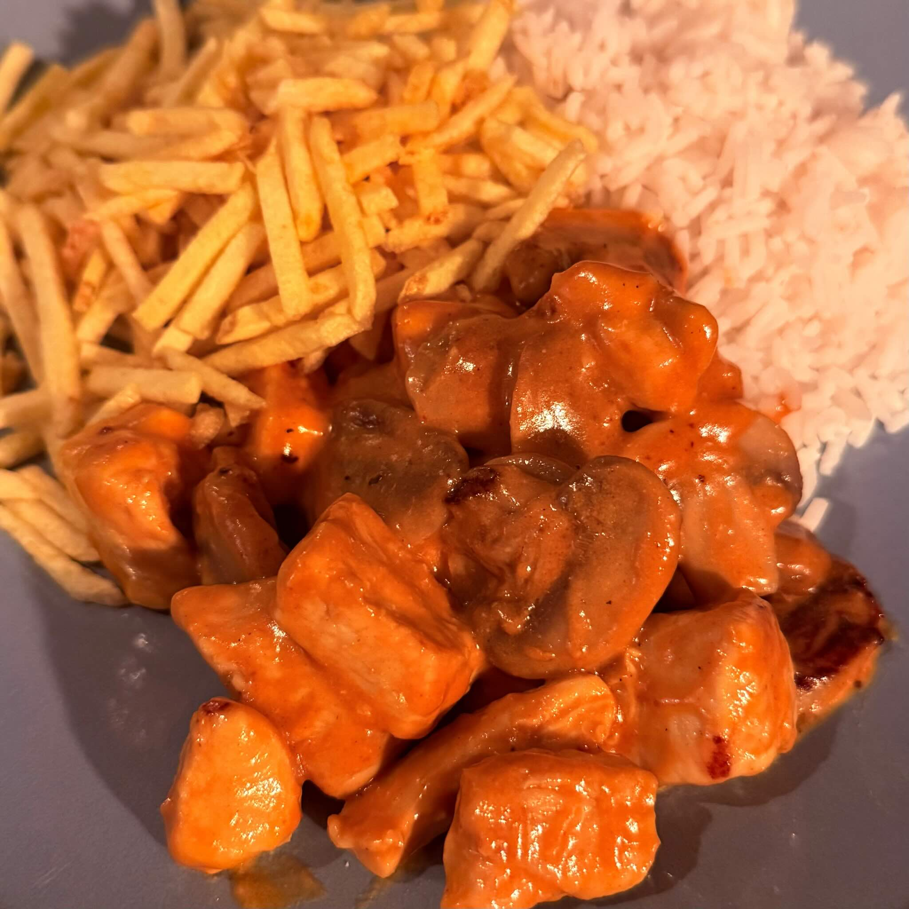

ingrediënten
- 800 g kipfilet
- 400 g champignons
- 250 ml slagroom
- 20 ml tomatenpuree
- 1 eetlepel mosterd
- 2 gehakte teentjes knoflook
- 1 gehakte ui
- 1 eetlepel roomboter of olijfolie
- 1 theelepel zout
- Zwarte peper, paprikapoeder en saffraan naar smaak
- Witte rijst en stroaardappelen (minifriet) om te begeleiden
voorbereiding
- Snijd de champignons in plakjes en doe ze met een eetlepel roomboter of olijfolie in een grote koekenpan.
- Gril de champignons op middelhoog vuur goudbruin en zet ze in een aparte bak.
- Voeg in dezelfde koekenpan de knoflook en de ui toe en bak tot ze goud zijn.
- Voeg de kipfilet, het zout en de kruiden toe en kook ongeveer 10 minuten of tot de kip gaar is.
- Voeg de tomatenpuree, mosterd en gegrilde champignons toe en kook nog een paar minuten, tot alles gemengd is.
- Voeg de slagroom toe en kook tot deze dikker wordt.
- Serveer met witte rijst en mini friet.
observaties
Vlees of vegetarisch: Hetzelfde stroganoffrecept kan ook met rundvlees worden gemaakt. Voor een vegetarische versie kun je gekookte kikkererwten gebruiken in plaats van kip.
Aardappelvariaties: Stroganoff wordt meestal geserveerd met mini friet, maar kan ook worden geserveerd met aardappelpuree of geroosterde aardappelen.
over de ingrediënten
Kipfilet
Als je wilt, kun je ook stukjes dijfilet gebruiken om meer smaak en vet toe te voegen.
Champignons
Er kunnen zowel witte als bruine champignons worden gebruikt.
Slagroom
De beste crèmeoptie voor dit recept is 35% slagroom. Andere alternatieven die ik heb gebruikt en goed werkten waren crème fraîche 30% en Griekse stijl yoghurt 10%.
Tomatenpuree
Een veelgebruikt alternatief hier is goede oude ketchup.
Minifriet
Een versie vergelijkbaar met Braziliaanse stroaardappelen wordt in de grote supermarkten verkocht als minifriet.